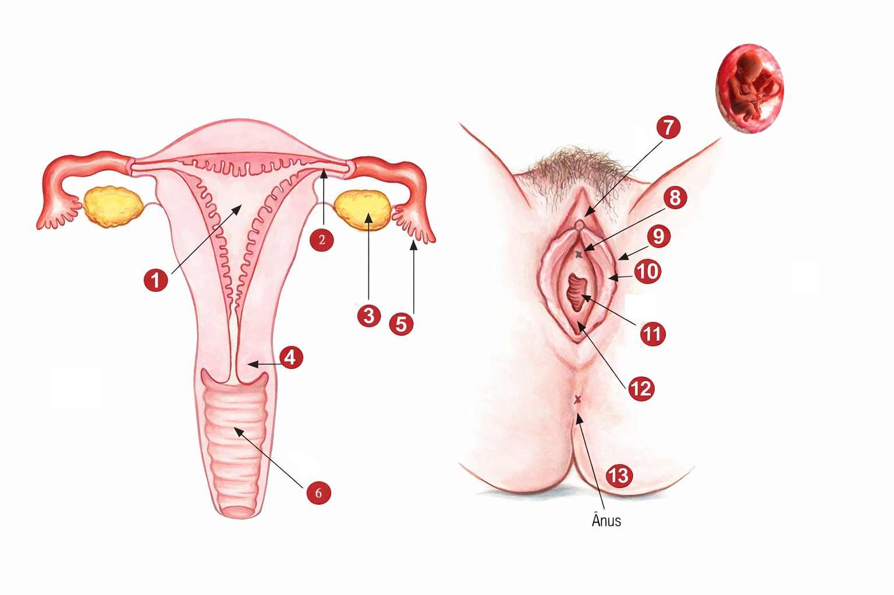
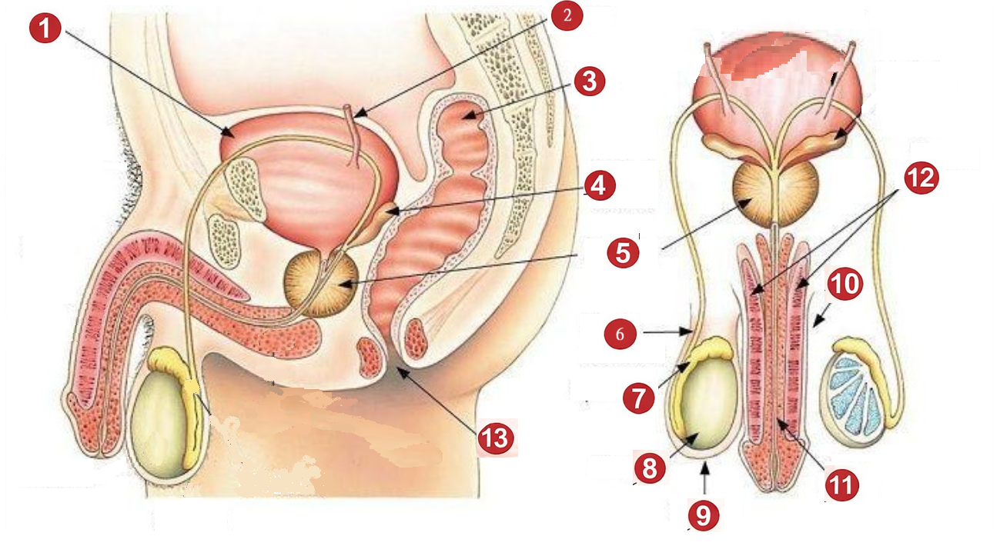

Módulo 1 – Hereditariedade, Reprodução e Desenvolvimento Embrionário
Verdadeiro/Falso · Escolha Múltipla · Desenvolvimento · Imagens
1
✅ Verdadeiro ou Falso
A hereditariedade é o processo pelo qual as características são transmitidas de uma geração para a outra através dos genes, incluindo traços físicos e predisposições a certas condições de saúde.
2
✅ Verdadeiro ou Falso
Na espécie humana, a reprodução sexuada resulta da fecundação de um óvulo (produzido pela fêmea) por um espermatozoide (produzido pelo macho), criando um novo ser semelhante aos progenitores.
3
✅ Verdadeiro ou Falso
Os seres humanos possuem 23 cromossomas em cada célula, organizados em 46 pares.
4
✅ Verdadeiro ou Falso
A mitose é a divisão celular que gera gametas (óvulos e espermatozoides) com metade do número de cromossomas da célula-mãe.
5
🔘 Escolha Múltipla
Qual das seguintes afirmações melhor define o conceito de GENOMA?
6
🔘 Escolha Múltipla
O sexo biológico do bebé é determinado por:
7
🖼️ Legenda de Imagem
Observa o diagrama do aparelho reprodutor feminino.
Escreve o nome correto de cada estrutura assinalada com os números.

📝 Escreve o nome correto de cada estrutura numerada:
8
✅ Verdadeiro ou Falso
Os ovários libertam um ovócito II mais ou menos a cada 28 dias, num processo denominado ciclo ovulatório. Esse ovócito só termina a oogénese se ocorrer fecundação.
9
🔘 Escolha Múltipla
O ciclo ovárico é composto por três fases. Qual é a sequência CORRETA?
10
🔘 Escolha Múltipla
A fecundação ocorre normalmente em que local do aparelho reprodutor feminino?
11
✅ Verdadeiro ou Falso
Quando um espermatozoide penetra no ovócito, ocorre imediatamente um bloqueio que impede a entrada de outros espermatozoides, formando-se o ovo/zigoto após a junção dos núcleos.
12
🔘 Escolha Múltipla
O desenvolvimento embrionário/fetal divide-se em três fases. Qual é a designação correta para o produto da fertilização na SEGUNDA fase (primeiro trimestre)?
13
🖼️ Questão com Imagem
Observa o diagrama do desenvolvimento fetal mês a mês e responde: Em que mês da gravidez o feto passa a ser designado "feto" (deixando de ser embrião), e quais as suas medidas aproximadas nesse momento?
📊 Tabela de Desenvolvimento Fetal
| Mês | Peso aprox. | Comprimento aprox. | Marco principal |
|---|---|---|---|
| 1º | < 1g | 5 mm | Coração começa a bater |
| 2º | 2-3g | 3-4 cm | Desenvolvimento de estruturas como braços |
| 3º | 30g | 10 cm | Órgãos genitais diferenciados |
| 4º | 150g | 16 cm | Sexo visível na ecografia |
| 5º | 250-300g | 25 cm | Audível com estetoscópio |
| 6º | 600g | 32 cm | Vérnix caseosa na pele |
| 7º | 1,2-1,4 kg | 40 cm | Pode sobreviver c/ ajuda |
| 8º | 2-2,5 kg | 47 cm | Pulmões maduros |
| 9º | 3-3,5 kg | ~50 cm | Pronto para nascer |
14
✅ Verdadeiro ou Falso
A vérnix caseosa é uma substância untuosa esbranquiçada que reveste a superfície cutânea do feto a partir do 6º mês, protegendo-o do contínuo contacto com o líquido amniótico.
15
🔘 Escolha Múltipla
Durante a gestação formam-se estruturas fundamentais de suporte ao embrião. Qual é a função do SACO AMNIÓTICO (bolsa das águas)?
16
📝 Desenvolvimento
Descreve as principais características do desenvolvimento fetal no 7º mês de gravidez, incluindo o peso, comprimento e capacidade de sobrevivência do feto.
💡 Dica: Pensa no sistema nervoso, movimentos, sentidos e viabilidade fetal.
📖 Resposta Modelo
No 7º mês de gravidez, o feto mede cerca de 40 cm e pesa entre 1,2 a 1,4 kg. O sistema nervoso amadurece significativamente: o feto movimenta as mãos com suavidade e precisão, abre e fecha os olhos, e reage a estímulos externos como luz intensa ou sons (com aumento da frequência cardíaca). Embora os movimentos sejam ativos, move-se menos porque ocupa praticamente todo o espaço do útero. Costuma girar com a cabeça para baixo, preparando-se para nascer. A partir deste mês, caso nascesse prematuramente, teria elevadas probabilidades de sobreviver com ajuda técnica especializada. No entanto, os pulmões ainda não estão completamente maduros, a pele é ainda fina e o sistema termorregulador não funciona perfeitamente.
17
✅ Verdadeiro ou Falso
O aparelho genital masculino é constituído pelos testículos, canais deferentes, vesículas seminais, próstata, uretra e pénis.
18
🔘 Escolha Múltipla
O sémen (esperma) é um fluido orgânico composto por vários elementos. Qual NÃO faz parte da constituição do sémen?
Módulo 2 – A Gravidez e a Vigilância da Saúde Materna
Verdadeiro/Falso · Escolha Múltipla · Desenvolvimento · Imagens
19
✅ Verdadeiro ou Falso
A gravidez é um estado de doença que necessita de tratamento médico intensivo desde o início.
20
🔘 Escolha Múltipla
Quais dos seguintes são considerados SINAIS DE CERTEZA de gravidez?
21
🔘 Escolha Múltipla
O "Sinal de Chadwick" é um sinal de probabilidade de gravidez. Em que consiste?
22
✅ Verdadeiro ou Falso
A duração normal de uma gravidez é de aproximadamente 40 semanas, correspondendo ao período entre a conceção e o trabalho de parto.
23
🖼️ Questão com Imagem
Observa os sinais de gravidez apresentados e escolhe a opção que os classifica corretamente nos grupos "Presunção", "Probabilidade" e "Certeza".
⚡ Sinais de Gravidez
🤢
Náuseas matinais💜
Sinal de Chadwick❤️
Batimentos cardíacos fetais🚫
Amenorreia🔬
β-HCG positivo🍼
Congestão mamária24
🔘 Escolha Múltipla
De acordo com as recomendações para a vigilância da gravidez de baixo risco, quantas consultas se realizam e quando deve ocorrer a primeira consulta?
25
✅ Verdadeiro ou Falso
Todas as grávidas devem ser suplementadas com ácido fólico (400 µg/dia) na preconceção e até às 12 semanas de gestação.
26
🔘 Escolha Múltipla
As ecografias obstétricas são realizadas em momentos específicos. Qual é o objetivo PRINCIPAL da ecografia do 2º trimestre (20-22 semanas)?
27
✅ Verdadeiro ou Falso
O Boletim de Saúde da Grávida (BSG) deve ser preenchido na 1ª consulta e mantido permanentemente atualizado, devendo a puérpera apresentá-lo também na consulta do puerpério.
28
🔘 Escolha Múltipla
Quais dos seguintes rastreios infecciosos são recomendados durante a gravidez?
29
🔘 Escolha Múltipla
De acordo com a terminologia obstétrica, um "parto de termo" ocorre:
30
✅ Verdadeiro ou Falso
Durante a gravidez é natural que o peso aumente devido à formação da placenta, líquido amniótico, crescimento do bebé, volume do útero e do sangue, tecido mamário e gordura de reserva. Um ganho de peso inadequado está associado a maior risco de atraso de crescimento intra-uterino.
31
🖼️ Questão com Imagem
Observa o diagrama das ecografias recomendadas na gravidez de baixo risco e responde: Em que momento se realiza a ecografia do 1º trimestre e qual é a sua principal vantagem?
🔊 Ecografias Obstétricas – Gravidez Baixo Risco
🔬
1º Trimestre
Primeiras semanas de grande transformação para a mãe e o bebé
→
📋
2º Trimestre
O bebé cresce e a gravidez torna-se mais visível
→
🍼
3º Trimestre
Fase final de preparação para o nascimento
32
📝 Desenvolvimento
Enumera e explica os principais OBJETIVOS da vigilância pré-natal durante a gravidez, referindo pelo menos 5 objetivos específicos.
💡 Dica: Pensa na avaliação do bem-estar, deteção precoce, fatores de risco, educação para a saúde, preparação para o parto e direitos.
📖 Resposta Modelo
Os principais objetivos da vigilância pré-natal são:
1. Avaliar o bem-estar materno e fetal através da história clínica e dos dados dos exames complementares de diagnóstico.
2. Detetar precocemente situações desviantes do normal curso da gravidez que possam afetar a grávida e o feto, estabelecendo a sua orientação.
3. Identificar fatores de risco que possam vir a interferir no curso normal da gravidez, na saúde da mulher e/ou do feto.
4. Promover a educação para a saúde, integrando o aconselhamento e o apoio psicossocial ao longo da vigilância periódica da gravidez.
5. Preparar para o parto e parentalidade.
6. Informar sobre os deveres e direitos parentais.
7. Garantir que a mulher/casal estejam envolvidos na tomada de decisão, promovendo o direito a uma adequada informação para uma decisão livre e esclarecida.
8. Promover a participação do outro progenitor na vigilância pré-natal.
1. Avaliar o bem-estar materno e fetal através da história clínica e dos dados dos exames complementares de diagnóstico.
2. Detetar precocemente situações desviantes do normal curso da gravidez que possam afetar a grávida e o feto, estabelecendo a sua orientação.
3. Identificar fatores de risco que possam vir a interferir no curso normal da gravidez, na saúde da mulher e/ou do feto.
4. Promover a educação para a saúde, integrando o aconselhamento e o apoio psicossocial ao longo da vigilância periódica da gravidez.
5. Preparar para o parto e parentalidade.
6. Informar sobre os deveres e direitos parentais.
7. Garantir que a mulher/casal estejam envolvidos na tomada de decisão, promovendo o direito a uma adequada informação para uma decisão livre e esclarecida.
8. Promover a participação do outro progenitor na vigilância pré-natal.
33
✅ Verdadeiro ou Falso
A suplementação com ferro (60 mg ferro ferroso/dia) deve ser efetuada por rotina em todas as grávidas, independentemente dos valores de hemoglobina.
34
🔘 Escolha Múltipla
Quais das seguintes análises fazem parte da avaliação analítica recomendada até às 14 semanas (1º trimestre)?
35
🔘 Escolha Múltipla
Uma grávida com IMC pré-gestacional normoponderal (18,5 - 24,9 kg/m²) tem como recomendação de ganho de peso total durante a gravidez:
Módulo 3 – Alterações Corporais, Parto e Puerpério
Verdadeiro/Falso · Escolha Múltipla · Desenvolvimento
36
✅ Verdadeiro ou Falso
Durante a gravidez, o aumento do fluxo vaginal (leucorreia) e o aumento do risco de infeções urinárias são alterações normais que decorrem das modificações fisiológicas ao nível da pélvis.
37
🔘 Escolha Múltipla
Qual das seguintes alterações corporais durante a gravidez está relacionada com o dorso?
38
✅ Verdadeiro ou Falso
A idade gestacional definitiva é definida pelo comprimento crânio-caudal na ecografia das 11-13 semanas e 6 dias, mantendo-se inalterável ao longo de toda a gravidez.
39
🔘 Escolha Múltipla
Qual das seguintes afirmações sobre a rastreio de cromossomopatias é CORRETA?
40
🔘 Escolha Múltipla
A informação pré-natal que deve ser fornecida à grávida inclui vários temas. Qual dos seguintes NÃO consta das recomendações de informação pré-natal?
41
📝 Desenvolvimento
Explica a importância da alimentação durante a gravidez, referindo o conceito de "comer por dois" e as implicações do ganho de peso inadequado (por excesso ou por défice).
💡 Dica: Considera o IMC pré-gestacional, os riscos do excesso e do défice de peso, e a recomendação sobre as necessidades calóricas.
📖 Resposta Modelo
Durante a gravidez, as necessidades nutricionais aumentam para apoiar o crescimento e desenvolvimento do bebé, bem como o metabolismo materno. No entanto, isto não significa que a grávida deva "comer por dois" – esta ideia é um mito. As necessidades calóricas adicionais são relativamente modestas e variam consoante o trimestre.
Ganho de peso insuficiente: Está associado ao aumento do risco de atraso de crescimento intra-uterino (RCIU) e de mortalidade peri-natal. O bebé poderá nascer com baixo peso, o que compromete o seu desenvolvimento.
Ganho de peso excessivo: Está associado ao aumento do peso do bebé ao nascimento (macrossomia fetal) e, secundariamente, ao aumento do risco de complicações obstétricas (parto difícil) e de doenças crónicas na vida adulta da criança (obesidade, diabetes).
As recomendações são adaptadas ao IMC pré-gestacional: mulheres com baixo peso devem ganhar entre 12,5-18 kg; normoponderal entre 11,5-16 kg; excesso de peso entre 7-11,5 kg; e obesas entre 5-9 kg. Uma alimentação saudável e variada, sem restrições excessivas mas também sem excessos, é o pilar fundamental.
Ganho de peso insuficiente: Está associado ao aumento do risco de atraso de crescimento intra-uterino (RCIU) e de mortalidade peri-natal. O bebé poderá nascer com baixo peso, o que compromete o seu desenvolvimento.
Ganho de peso excessivo: Está associado ao aumento do peso do bebé ao nascimento (macrossomia fetal) e, secundariamente, ao aumento do risco de complicações obstétricas (parto difícil) e de doenças crónicas na vida adulta da criança (obesidade, diabetes).
As recomendações são adaptadas ao IMC pré-gestacional: mulheres com baixo peso devem ganhar entre 12,5-18 kg; normoponderal entre 11,5-16 kg; excesso de peso entre 7-11,5 kg; e obesas entre 5-9 kg. Uma alimentação saudável e variada, sem restrições excessivas mas também sem excessos, é o pilar fundamental.
42
✅ Verdadeiro ou Falso
A pesquisa de estreptococos do grupo B deve ser realizada entre as 35-37 semanas de gestação, através de colheita do 1/3 externo da vagina e ano-retal.
Módulo 3B – Fisiologia do Parto, Puerpério e Complicações
Verdadeiro/Falso · Escolha Múltipla · Desenvolvimento · Imagens
49
🖼️ Legenda de Imagem
Observa o diagrama do aparelho reprodutor masculino.
Escreve o nome correto de cada estrutura assinalada com os números 1 a 13.

✏️ Escreve o nome de cada estrutura:
1
2
3
4
5
6
7
8
9
10
11
12
13
📖 Respostas Corretas
1 – Bexiga
2 – Ureter
3 – Reto
4 – Vesícula seminal
5 – Próstata
6 – Canal deferente
7 – Pénis
8 – Testículo
9 – Escroto
10 – Corpos cavernosos
11 – Uretra
12 – Epidídimo
13 – Ânus
2 – Ureter
3 – Reto
4 – Vesícula seminal
5 – Próstata
6 – Canal deferente
7 – Pénis
8 – Testículo
9 – Escroto
10 – Corpos cavernosos
11 – Uretra
12 – Epidídimo
13 – Ânus
50
🔘 Escolha Múltipla
Qual é a função principal da próstata no sistema reprodutor masculino?
51
✅ Verdadeiro ou Falso
O trabalho de parto é dividido em três estadios: o primeiro (dilatação), o segundo (expulsão do feto) e o terceiro (dequitadura/expulsão da placenta).
52
🔘 Escolha Múltipla
O 1º estadio do trabalho de parto (fase de dilatação) termina quando:
53
🔘 Escolha Múltipla
O que é a dequitadura no contexto do trabalho de parto?
54
✅ Verdadeiro ou Falso
No parto eutócico (parto normal/vaginal), o bebé nasce pela via vaginal em apresentação cefálica, sem necessidade de instrumentação ou intervenção cirúrgica.
55
🔘 Escolha Múltipla
Qual das seguintes afirmações sobre os tipos de parto é CORRETA?
56
🔘 Escolha Múltipla
A cesariana é uma cirurgia em que o bebé é retirado através de incisão no abdómen e útero da mãe. Qual das seguintes situações é uma indicação frequente para cesariana?
57
✅ Verdadeiro ou Falso
A episiotomia é um corte cirúrgico realizado no períneo durante o parto vaginal para alargar a abertura vaginal e facilitar a saída do bebé, sendo atualmente recomendada de rotina em todos os partos vaginais.
58
📝 Desenvolvimento
Descreve os três estadios do trabalho de parto, indicando o que acontece em cada um deles e quanto tempo podem durar em média numa primípara (mulher a dar à luz pela 1ª vez).
💡 Dica: 1º Estadio (dilatação), 2º Estadio (expulsão), 3º Estadio (dequitadura). Lembra-te das fases latente e ativa do 1º estadio.
📖 Resposta Modelo
1º Estadio – Fase de Dilatação: Inicia-se com o início das contrações regulares e termina com a dilatação completa do colo uterino (10 cm). Divide-se em fase latente (dilatação lenta, até 6 cm) e fase ativa (dilatação mais rápida, de 6 a 10 cm). Numa primípara pode durar 10 a 20 horas no total. As contrações tornam-se progressivamente mais frequentes, intensas e longas.
2º Estadio – Fase de Expulsão: Começa com a dilatação completa e termina com o nascimento do bebé. A mulher sente necessidade de fazer força (puxos) com as contrações. Dura geralmente 30 minutos a 2 horas numa primípara. O bebé desce pelo canal de parto e nasce pela vulva.
3º Estadio – Dequitadura: Inicia-se após o nascimento do bebé e termina com a expulsão completa da placenta e membranas amnióticas. Normalmente ocorre entre os 5 e os 30 minutos após o nascimento. São administradas frequentemente uterotónicos (ex: oxitocina) para facilitar este processo e prevenir hemorragia.
2º Estadio – Fase de Expulsão: Começa com a dilatação completa e termina com o nascimento do bebé. A mulher sente necessidade de fazer força (puxos) com as contrações. Dura geralmente 30 minutos a 2 horas numa primípara. O bebé desce pelo canal de parto e nasce pela vulva.
3º Estadio – Dequitadura: Inicia-se após o nascimento do bebé e termina com a expulsão completa da placenta e membranas amnióticas. Normalmente ocorre entre os 5 e os 30 minutos após o nascimento. São administradas frequentemente uterotónicos (ex: oxitocina) para facilitar este processo e prevenir hemorragia.
59
🔘 Escolha Múltipla
Relativamente ao ambiente e às emoções durante o trabalho de parto, qual das seguintes afirmações é CORRETA?
60
✅ Verdadeiro ou Falso
A analgesia epidural (peridural) é atualmente uma das principais estratégias de alívio da dor durante o trabalho de parto, podendo ser solicitada pela parturiente e administrada por anestesiologista.
61
🔘 Escolha Múltipla
O plano de parto é um documento elaborado pela grávida/casal durante a gravidez. Para que serve?
62
🧠 Ordenação
Ordena corretamente o percurso dos espermatozoides até ao local da fecundação.
Escreve as letras (A, B, C, D, E) pela ordem correta.
A) Trompa de Falópio
B) Vagina
C) Útero
D) Colo do Útero
E) Ovário
✏️ Escreve a sequência correta:
63
✅ Verdadeiro ou Falso
O puerpério (pós-parto) é o período que se inicia logo após a expulsão da placenta e se prolonga habitualmente por 6 a 8 semanas, durante o qual o organismo materno retorna ao estado pré-gestacional.
64
🔘 Escolha Múltipla
Quais são os cuidados prioritários à puérpera nas primeiras horas após o parto?
65
🔘 Escolha Múltipla
Relativamente ao aleitamento materno, qual das seguintes afirmações é CORRETA?
66
✅ Verdadeiro ou Falso
A involução uterina é o processo pelo qual o útero retorna ao seu tamanho e posição normais após o parto, sendo facilitada pela amamentação (através da libertação de ocitocina).
67
🔘 Escolha Múltipla
Os lóquios são a secreção vaginal normal do pós-parto. Qual é a sequência correta da sua evolução?
68
🔘 Escolha Múltipla
Qual das seguintes características dos lóquios deve ser considerada um sinal de alerta que requer comunicação imediata à equipa de saúde?
69
✅ Verdadeiro ou Falso
Os lóquios com odor fétido são sempre normais no pós-parto e não requerem qualquer avaliação médica.
70
📝 Desenvolvimento
Descreve as características normais dos lóquios ao longo do puerpério e indica pelo menos 4 sinais de alerta que devem ser comunicados à equipa de saúde.
💡 Dica: Lembra-te das 3 fases dos lóquios (rubros, serosos, brancos) e dos sinais que indicam infeção ou complicação.
📖 Resposta Modelo
Características Normais dos Lóquios:
Os lóquios são a secreção vaginal resultante da involução uterina após o parto. Evoluem em três fases:
1ª – Lóquios Rubros (1º ao 4º dia): Cor vermelha viva, semelhante à menstruação abundante, com possíveis pequenos coágulos. Compostos principalmente por sangue, decidua e restos placentares.
2ª – Lóquios Serosos (4º ao 10º dia): Cor rosa/acastanhada, menos espessos. Compostos por sangue, leucócitos e secreções uterinas.
3ª – Lóquios Brancos/Albos (10º dia até à 6ª semana): Cor esbranquiçada ou amarelada, compostos principalmente por leucócitos e células epiteliais.
Sinais de Alerta (a comunicar à equipa de saúde):
1. Odor fétido ou desagradável (sinal de infeção – endometrite)
2. Cor esverdeada, purulenta ou aspeto anormal
3. Hemorragia abundante súbita ou com coágulos volumosos (sinal de hemorragia pós-parto)
4. Retorno a lóquios rubros após a sua diminuição (pode indicar infeção ou sub-involução uterina)
5. Febre associada às alterações dos lóquios
6. Ausência total de lóquios nas primeiras semanas (loquiometra – retenção de lóquios)
Os lóquios são a secreção vaginal resultante da involução uterina após o parto. Evoluem em três fases:
1ª – Lóquios Rubros (1º ao 4º dia): Cor vermelha viva, semelhante à menstruação abundante, com possíveis pequenos coágulos. Compostos principalmente por sangue, decidua e restos placentares.
2ª – Lóquios Serosos (4º ao 10º dia): Cor rosa/acastanhada, menos espessos. Compostos por sangue, leucócitos e secreções uterinas.
3ª – Lóquios Brancos/Albos (10º dia até à 6ª semana): Cor esbranquiçada ou amarelada, compostos principalmente por leucócitos e células epiteliais.
Sinais de Alerta (a comunicar à equipa de saúde):
1. Odor fétido ou desagradável (sinal de infeção – endometrite)
2. Cor esverdeada, purulenta ou aspeto anormal
3. Hemorragia abundante súbita ou com coágulos volumosos (sinal de hemorragia pós-parto)
4. Retorno a lóquios rubros após a sua diminuição (pode indicar infeção ou sub-involução uterina)
5. Febre associada às alterações dos lóquios
6. Ausência total de lóquios nas primeiras semanas (loquiometra – retenção de lóquios)
71
🔘 Escolha Múltipla
Qual das seguintes é considerada uma das complicações maternas mais graves do pós-parto imediato?
72
✅ Verdadeiro ou Falso
A endometrite pós-parto é uma infeção do endométrio (revestimento interno do útero) que se manifesta geralmente com febre, dor uterina à palpação, lóquios com odor fétido e mal-estar geral.
73
🔘 Escolha Múltipla
Qual é a diferença entre o baby blues e a depressão pós-parto?
74
✅ Verdadeiro ou Falso
O tromboembolismo venoso (trombose venosa profunda e embolia pulmonar) é uma complicação potencialmente grave do pós-parto, sendo o risco aumentado pelo repouso prolongado, pela desidratação e pela hipercoagulabilidade característica do período pós-parto.
75
🔘 Escolha Múltipla
A mastite puerperal é uma complicação do pós-parto que afeta as mamas. Quais são os seus principais sinais e sintomas?
76
📝 Desenvolvimento
Descreve pelo menos 5 complicações maternas que podem ocorrer no pós-parto, indicando para cada uma os principais sinais e sintomas de alerta.
💡 Dica: Pensa em hemorragia, infeção, trombose, alterações mamárias e alterações psicológicas.
📖 Resposta Modelo
1. Hemorragia Pós-Parto (HPP): Perda de sangue superior a 500 ml (parto vaginal) ou 1000 ml (cesariana). Sinais: hemorragia abundante com coágulos, útero mal contraído (atonia uterina), taquicardia, hipotensão, palidez. É a principal causa de mortalidade materna.
2. Endometrite / Infeção Puerperal: Infeção do revestimento uterino. Sinais: febre (≥38°C), dor uterina à palpação, lóquios com odor fétido e aspeto purulento, mal-estar geral.
3. Mastite Puerperal: Inflamação/infeção da mama durante o aleitamento. Sinais: mama quente, vermelha, edemaciada e dolorosa, febre, calafrios, mal-estar. Pode evoluir para abcesso mamário.
4. Tromboembolismo Venoso: Trombose venosa profunda (TVP) ou embolia pulmonar. Sinais de TVP: dor, calor, rubor e edema numa perna. Sinais de embolia: dificuldade respiratória súbita, dor torácica, taquicardia.
5. Depressão Pós-Parto: Perturbação do humor persistente. Sinais: tristeza profunda, choro fácil, ansiedade, dificuldade em cuidar do bebé, pensamentos negativos, insónia, que persistem mais de 2 semanas.
6. Infeção da ferida cirúrgica (cesariana/episiotomia): Sinais: rubor, calor, edema, secreção purulenta e dor na ferida, por vezes acompanhados de febre.
2. Endometrite / Infeção Puerperal: Infeção do revestimento uterino. Sinais: febre (≥38°C), dor uterina à palpação, lóquios com odor fétido e aspeto purulento, mal-estar geral.
3. Mastite Puerperal: Inflamação/infeção da mama durante o aleitamento. Sinais: mama quente, vermelha, edemaciada e dolorosa, febre, calafrios, mal-estar. Pode evoluir para abcesso mamário.
4. Tromboembolismo Venoso: Trombose venosa profunda (TVP) ou embolia pulmonar. Sinais de TVP: dor, calor, rubor e edema numa perna. Sinais de embolia: dificuldade respiratória súbita, dor torácica, taquicardia.
5. Depressão Pós-Parto: Perturbação do humor persistente. Sinais: tristeza profunda, choro fácil, ansiedade, dificuldade em cuidar do bebé, pensamentos negativos, insónia, que persistem mais de 2 semanas.
6. Infeção da ferida cirúrgica (cesariana/episiotomia): Sinais: rubor, calor, edema, secreção purulenta e dor na ferida, por vezes acompanhados de febre.
77
🔘 Escolha Múltipla
No âmbito das competências do Técnico/a Auxiliar de Saúde (TAS) nos cuidados à saúde materna, qual das seguintes ações NÃO é da sua responsabilidade?
78
✅ Verdadeiro ou Falso
O TAS tem um papel fundamental na identificação e comunicação de sinais de alerta à equipa de saúde (febre, hemorragia, alterações dos lóquios, dor intensa), mas não pode tomar decisões clínicas de forma autónoma, devendo sempre reportar ao enfermeiro ou médico responsável.
79
🔘 Escolha Múltipla
Qual das seguintes tarefas se enquadra CORRETAMENTE no âmbito de intervenção do TAS nos cuidados à saúde materna?
80
📝 Desenvolvimento
Descreve o papel do Técnico/a Auxiliar de Saúde (TAS) nos cuidados à puérpera durante o internamento pós-parto, identificando pelo menos 6 tarefas concretas que se enquadram no âmbito da sua intervenção.
💡 Dica: Pensa nos cuidados de higiene, na mobilização, na observação e registo, no apoio emocional, no aleitamento e na preparação para a alta.
📖 Resposta Modelo
O TAS, no internamento pós-parto, atua sempre em colaboração e sob supervisão da equipa de enfermagem e médica. As suas tarefas concretas incluem:
1. Cuidados de higiene e conforto: Auxiliar a puérpera nos cuidados de higiene pessoal (banho, higiene perineal), especialmente nas primeiras horas após o parto ou cesariana, quando a mobilidade está limitada.
2. Apoio à mobilização: Auxiliar a puérpera a mobilizar-se na cama e a levantar-se pela primeira vez, prevenindo quedas e promovendo a recuperação.
3. Observação e registo de sinais de alerta: Observar e comunicar à equipa qualquer sinal preocupante: hemorragia abundante, lóquios com odor fétido, febre, dor intensa, edema das pernas, alterações da ferida cirúrgica.
4. Apoio ao aleitamento materno: Apoiar no posicionamento correto da puérpera e do recém-nascido para a amamentação, comunicando dificuldades à enfermeira.
5. Apoio emocional: Manter uma presença calma e empática, ouvir as preocupações da puérpera, promover um ambiente tranquilo e de segurança para a nova família.
6. Apoio nas refeições: Assegurar que a puérpera se alimenta e hidrata adequadamente, assistindo-a se necessário.
7. Preparação para a alta: Colaborar na organização do espaço e dos pertences da puérpera, auxiliando na preparação para regressar a casa.
8. Cuidados ao recém-nascido: Auxiliar nos cuidados básicos ao RN (higiene, muda de fralda) sob orientação da enfermeira, assegurando a segurança do bebé.
1. Cuidados de higiene e conforto: Auxiliar a puérpera nos cuidados de higiene pessoal (banho, higiene perineal), especialmente nas primeiras horas após o parto ou cesariana, quando a mobilidade está limitada.
2. Apoio à mobilização: Auxiliar a puérpera a mobilizar-se na cama e a levantar-se pela primeira vez, prevenindo quedas e promovendo a recuperação.
3. Observação e registo de sinais de alerta: Observar e comunicar à equipa qualquer sinal preocupante: hemorragia abundante, lóquios com odor fétido, febre, dor intensa, edema das pernas, alterações da ferida cirúrgica.
4. Apoio ao aleitamento materno: Apoiar no posicionamento correto da puérpera e do recém-nascido para a amamentação, comunicando dificuldades à enfermeira.
5. Apoio emocional: Manter uma presença calma e empática, ouvir as preocupações da puérpera, promover um ambiente tranquilo e de segurança para a nova família.
6. Apoio nas refeições: Assegurar que a puérpera se alimenta e hidrata adequadamente, assistindo-a se necessário.
7. Preparação para a alta: Colaborar na organização do espaço e dos pertences da puérpera, auxiliando na preparação para regressar a casa.
8. Cuidados ao recém-nascido: Auxiliar nos cuidados básicos ao RN (higiene, muda de fralda) sob orientação da enfermeira, assegurando a segurança do bebé.
Módulo 5 – Consolidação e Casos Práticos
Escolha Múltipla · Desenvolvimento · Imagens
43
🔘 Escolha Múltipla
Uma grávida RhD negativa deve receber imunoglobulina anti-D em que momento(s) da gravidez?
44
✅ Verdadeiro ou Falso
A gravidez deve ser entendida como uma oportunidade de intervenção para modificar hábitos e comportamentos, nomeadamente hábitos alimentares, exercício físico, cessação tabágica e consumo de substâncias psicoativas.
45
🔘 Escolha Múltipla
A diabetes gestacional é rastreada durante a gravidez. Que exame é utilizado para o seu diagnóstico universal?
46
🖼️ Questão com Imagem
Observa o esquema da informação genética e identifica a relação hierárquica correta entre os três conceitos: DNA, Gene e Cromossoma.
🧬 Hierarquia da Informação Genética
🧬 CROMOSSOMA
▼
🔵 GENES
▼
🔮 DNA
Humanos: 46 cromossomas (23 pares) · Genoma humano: ~120 000 genes
Com base no esquema, qual afirmação está CORRETA?
47
📝 Desenvolvimento
Como futuro/a Técnico/a Auxiliar de Saúde (TAS), quais são as tuas responsabilidades e competências no âmbito dos cuidados na saúde materna? Descreve pelo menos 4 tarefas que se enquadram no âmbito de intervenção do TAS nesta área.
💡 Dica: Pensa no apoio à grávida, à puérpera, na vigilância de sinais, no apoio às consultas e nos cuidados básicos.
📖 Resposta Modelo
O TAS, no âmbito dos cuidados na saúde materna, tem um papel de suporte e colaboração com a equipa de saúde. As suas principais competências incluem:
1. Apoio às consultas de vigilância pré-natal: Acolhimento da grávida, preparação do ambiente de consulta, auxílio no registo de dados básicos (peso, tensão arterial, etc.), sempre sob supervisão do profissional de saúde responsável.
2. Educação para a saúde: Transmissão de informação básica sobre estilos de vida saudáveis na gravidez (alimentação, repouso, higiene), reforçando as orientações dadas pelos profissionais de saúde.
3. Apoio à puérpera: Auxílio nos cuidados de higiene e conforto após o parto, apoio emocional, vigilância de sinais de alerta (ex: características dos lóquios, sinais de infeção).
4. Apoio ao aleitamento materno: Apoio e incentivo à amamentação, orientação sobre posicionamento correto, sempre em colaboração com a enfermagem.
5. Vigilância de sinais de alerta: Identificação e comunicação imediata de sinais preocupantes à equipa de saúde (febre, hemorragia, dor intensa, alterações dos lóquios).
6. Registo e atualização de documentação: Colaboração no preenchimento e atualização do Boletim de Saúde da Grávida e outros documentos, sempre dentro das suas competências.
1. Apoio às consultas de vigilância pré-natal: Acolhimento da grávida, preparação do ambiente de consulta, auxílio no registo de dados básicos (peso, tensão arterial, etc.), sempre sob supervisão do profissional de saúde responsável.
2. Educação para a saúde: Transmissão de informação básica sobre estilos de vida saudáveis na gravidez (alimentação, repouso, higiene), reforçando as orientações dadas pelos profissionais de saúde.
3. Apoio à puérpera: Auxílio nos cuidados de higiene e conforto após o parto, apoio emocional, vigilância de sinais de alerta (ex: características dos lóquios, sinais de infeção).
4. Apoio ao aleitamento materno: Apoio e incentivo à amamentação, orientação sobre posicionamento correto, sempre em colaboração com a enfermagem.
5. Vigilância de sinais de alerta: Identificação e comunicação imediata de sinais preocupantes à equipa de saúde (febre, hemorragia, dor intensa, alterações dos lóquios).
6. Registo e atualização de documentação: Colaboração no preenchimento e atualização do Boletim de Saúde da Grávida e outros documentos, sempre dentro das suas competências.
48
🔘 Escolha Múltipla
Na avaliação materna realizada em cada consulta de vigilância pré-natal, quais são os parâmetros que devem ser sistematicamente avaliados?
🏆
Resultado Final
0
valores
0
Respostas Certas
0
Respostas Erradas
0
Total Questões
0%
Percentagem
Nota: As questões de desenvolvimento não são contabilizadas automaticamente na nota final.